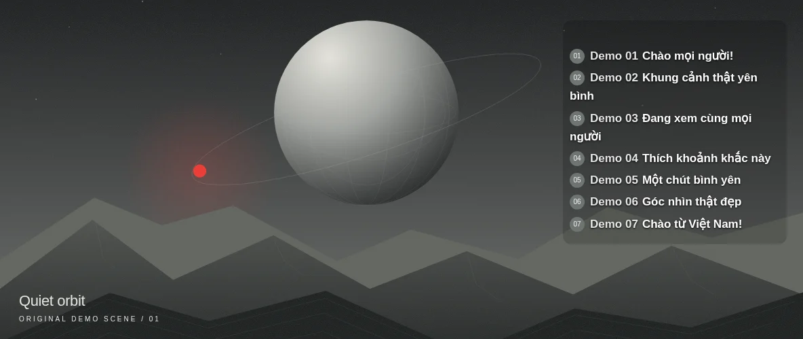
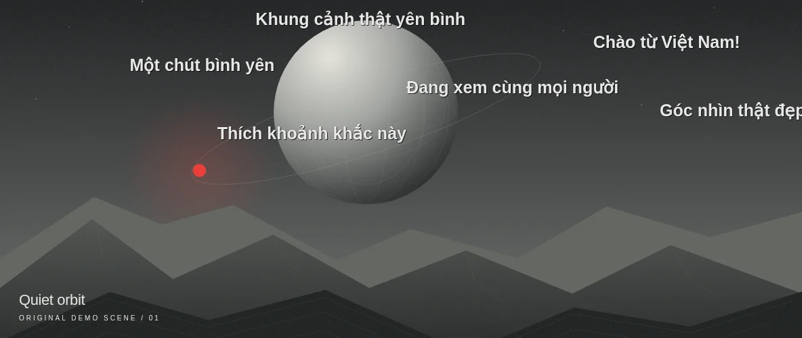
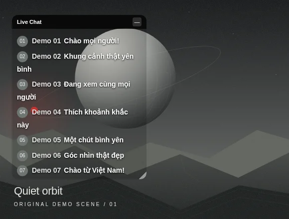
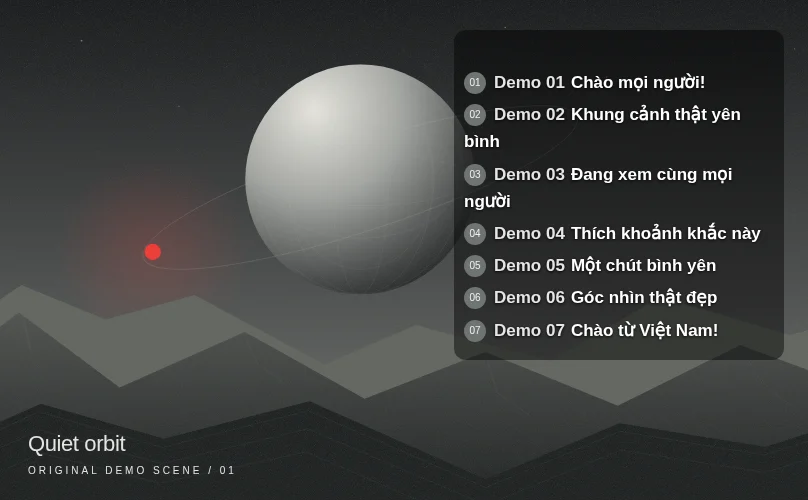
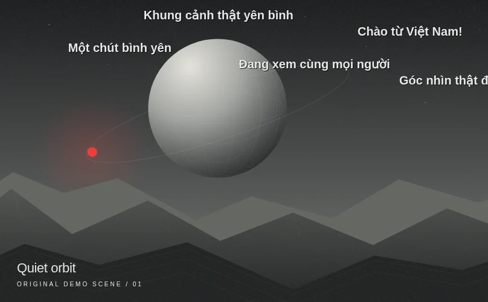

01 · Chat nổi
Xem video. Không lỡ cuộc trò chuyện.
Khung chat trong suốt không viền ở Toàn màn hình và Chế độ rạp, tự ẩn cột chat mặc định.
Khung chat YouTube trong suốt kéo thả tự do và bình luận Danmaku chạy ngang 60FPS cho livestream toàn màn hình — không theo dõi.
Manifest V3 · Nhẹ ~37 KB · Không theo dõi · Hỗ trợ Livestream & Replay

Ảnh chụp thật từ bản v1.2.0 trên cảnh mẫu dựng sẵn.
Khung chat trong suốt không viền ở Toàn màn hình và Chế độ rạp, tự ẩn cột chat mặc định.

Chữ chạy ngang kiểu Bilibili kèm avatar, emoji, Super Chat, đồng bộ tạm dừng và chạy độc lập.


Tự ghi nhớ vị trí gọn trong trình phát; thu gọn thành nút Live Chat chỉ bằng một chạm.

Chỉnh màu trực tiếp trong popup, ổn định trên cả Firefox lẫn Chrome, không làm mờ video.

Tùy chọn 4s–20s, cỡ 14–38px, viền đen chống chói và vùng 1/3, 1/2, 3/4 hoặc toàn màn hình.
~37 KB JS thuần · Không vẽ lại canvas · Không blur nặng GPU.
Gom tin nhắn từ iframe chat theo chu kỳ 80ms thay vì gửi lẻ gây nghẽn.
Giữ chỗ thời điểm rời khung giúp chữ chạy không chồng chéo và chờ khi pause.
Transform thuần trên compositor, đồng bộ cài đặt một kênh không tải lại trang.
Bấm bất kỳ chương nào để tua nhanh tới tính năng tương ứng. Có phụ đề tiếng Việt.
| Tiêu chí | YouTube mặc định | Custom Chat & Danmaku |
|---|---|---|
| Chat toàn màn hình | Co hẹp hoặc ẩn cột chat | Video 100% + khung nổi trong suốt |
| Chế độ Danmaku | Không có | DOM/WAAPI 60FPS chống đè |
| Vị trí & kích thước | Cố định cột bên phải | Kéo thả, đổi cỡ, nút Live Chat |
| Màu sắc & độ mờ | Chỉ sáng / tối | Độ mờ 0–100%, RGB / HEX |
| Replay & Super Chat | Đứng yên ở cột bên | Dừng theo video + nổi trên Danmaku |
Mã nguồn mở MIT bằng JavaScript thuần. Không phân tích, không quảng cáo, data_collection_permissions: ["none"].
storage
Lưu cài đặt hiển thị và tọa độ khung chat cục bộ tại chrome.storage.local.
https://www.youtube.com/*
Chỉ đọc tin nhắn live chat đang hiển thị trên trang xem của YouTube.
Bật toàn màn hình hoặc chế độ rạp, tiện ích tự ẩn cột chat mặc định và đưa chat lên thành khung nổi trong suốt đè lên video.
Có. Tắt Khung Chat Nổi và giữ Danmaku bật, chữ chạy vẫn đọc trực tiếp từ chat gốc của YouTube.
Có, hỗ trợ cả livestream lẫn live chat replay; khi tạm dừng video thì chữ Danmaku cũng đứng yên và chạy tiếp đồng bộ.
Chrome, Edge, Brave, Arc, Cốc Cốc, Opera qua Chrome Web Store và bản Manifest V3 riêng cho Firefox (109+) trên GitHub.
Không. Gom lô IPC 80ms, chuyển động WAAPI trên compositor và không dùng hiệu ứng blur; toàn bộ gói chỉ ~37 KB.
Miễn phí 100%, mã nguồn mở MIT, không tài khoản, không theo dõi và mọi cài đặt chỉ nằm trên trình duyệt của bạn.
Cài đặt tiện ích mã nguồn mở ~37 KB chỉ trong vài giây.